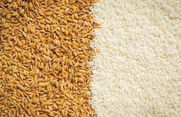

Rajgira Ladoo
Traditional round ladoos made from pure amaranth (rajgira) and natural jaggery. Light, nutty, naturally sweet.
Learn More →Handcrafted organic ladoos, chikkis, and jaggery — made by 90+ women artisans in Kopargaon using traditional recipes and pure ingredients.
आरोग्यम धनसंपदा
Every product is made with organic ingredients, pure jaggery, and the skilled hands of our women artisans.
Traditional round ladoos made from pure amaranth (rajgira) and natural jaggery. Light, nutty, naturally sweet.
Learn More →
Classic Maharashtra peanut chikki made with whole roasted peanuts and pure jaggery. A childhood favourite, elevated.
Learn More →
Crushed peanut chikki — a smoother, finer texture than whole peanut chikki. Melts in the mouth.
Learn More →
Traditional sesame seed ladoos made with organic jaggery. Rich in calcium, iron, and healthy fats.
Learn More →
Puffed rice ladoos made with jaggery syrup. Light, crispy, and delightfully airy — a nostalgic classic.
Learn More →
Unrefined organic jaggery made from pure sugarcane juice. No chemicals, no additives. The base of everything Kalansh makes.
Learn More →
Crispy chikki made from puffed amaranth (rajgira) set in pure jaggery. Gluten-free, high protein, and deeply satisfying.
Learn More →
A curated gift box featuring an assortment of Kalansh's finest organic sweets — perfect for festivals, corporate gifting, and loved ones.
Learn More →Every ingredient is sourced from verified organic farmers. No synthetic pesticides, no chemical fertilisers — just pure, natural food as it was meant to be.
We use pure organic jaggery instead of refined sugar. Rich in iron, minerals, and natural sweetness — the way Indian sweets were always made.
90+ women artisans in Kopargaon handcraft every product. Each ladoo is rolled with pride, each chikki made with love — and every purchase supports rural women's empowerment.
Choose your favourite Kalansh sweets, build a personalised gift box, and order directly on WhatsApp. Perfect for Diwali, weddings, corporate gifting, and loved ones.
Start Building Your Box →Rajgira Ladoos sold — and counting
Learn about the foods we make, the people who make them, and why traditional Indian nutrition matters.

Rajgira has been a staple of Maharashtrian fasting food for centuries. But modern nutrition science is just catching up to what our grandmothers already knew.
Read More →Refined white sugar is a recent invention. Jaggery — gur — has sweetened Indian kitchens for over 3,000 years. Here is what the difference actually means for your body.
Read More →When Rohit and Vinay Kale started Kalansh in 2019, they had a product idea. But more than that, they had a mission — to create meaningful employment for women in rural Maharashtra.
Read More →Our products are distributed across 20+ cities and growing.